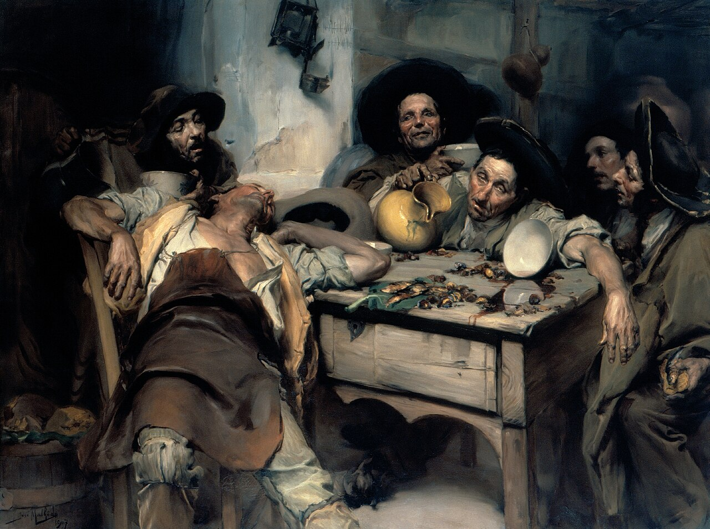

José Malhoa, peintre du Portugal populaire : vie, œuvres majeures et musées
Le 26 octobre 1933 mourait à Figueiró dos Vinhos José Malhoa, le peintre qui a fait entrer le peuple portugais dans les grandes salles d'exposition. Paysans, buveurs, fadistes, pèlerins : là où ses contemporains peignaient des rois et des batailles, il a peint les gens qu'il croisait.

De Caldas da Rainha à l'Académie
José Vital Branco Malhoa naît le 28 avril 1855 à Caldas da Rainha, ville thermale de l'Estrémadure. Très jeune, il entre à l'Académie des beaux-arts de Lisbonne, où il suit l'enseignement de Miguel Ângelo Lupi et de Tomás da Anunciação. La peinture ne le fait pourtant pas vivre tout de suite : il exerce d'abord un autre métier, et ce n'est qu'en 1881, après le succès de Seara Invadida, qu'il se consacre entièrement à son art.
Cette même année se forme à Lisbonne le Grupo do Leão, un cercle d'artistes réunis dans une brasserie de la ville, qui veut renouveler la peinture portugaise par l'observation directe de la nature et de la vie. Malhoa en fait partie. Plus tard, il sera le premier président de la Société nationale des beaux-arts.
Le naturalisme, ou le choix du réel
Le naturalisme refuse l'idéalisation. Il demande de peindre ce que l'on voit, avec la lumière telle qu'elle tombe et les gens tels qu'ils sont. Chez Malhoa, ce choix prend une couleur particulière : il s'attache aux campagnes et aux quartiers populaires, à leurs fêtes, à leurs croyances, à leurs excès aussi.
Ses personnages ne posent pas. Ils rient, somnolent, boivent, prient. Chaque visage semble porter une biographie. C'est ce qui donne à ses toiles leur force documentaire : elles montrent un Portugal de la fin du XIXe siècle que la photographie de l'époque saisissait rarement avec autant de chaleur.
Os Bêbados (1907) : la fête qui déborde

Autour d'une table de taverne jonchée de châtaignes et de sardines, des hommes en chapeau ont trop bu. L'un s'est effondré sur sa chaise, la tête renversée ; un autre verse encore du vin d'une cruche jaune ; un bol renversé laisse couler son contenu sur le bois. Le tableau est aussi connu sous le titre Festejando o S. Martinho : il évoque la Saint-Martin, le 11 novembre, quand on goûte le vin nouveau avec les premières châtaignes.
Malhoa ne juge pas ses personnages. Il observe, avec une pointe d'humour, la fatigue, l'ivresse et la complicité d'une fin de fête.
O Fado (1910) : le tableau devenu symbole
C'est l'œuvre la plus célèbre de Malhoa, et l'une des plus reproduites de toute la peinture portugaise. Dans une chambre modeste, un homme en chapeau joue de la guitare portugaise et chante, les yeux mi-clos. À côté de lui, une femme en jupe rouge, une cigarette entre les doigts, l'écoute, le menton posé sur la main.
Les modèles ont existé : le guitariste Amâncio et sa compagne, surnommée « Adelaide da Facada ». Malhoa a d'abord envisagé un triptyque, comme le montrent ses études préparatoires au fusain, avant de peindre deux versions très proches du tableau, l'une datée de 1909, l'autre de 1910. C'est la seconde, exposée à l'étranger dès l'époque, qui est devenue l'image de référence.
Le tableau a eu une longue vie après lui. Il a inspiré le « Fado Malhoa », chanté par Amália Rodrigues, et, en 2005, le peintre João Vieira en a tiré une parodie intitulée O Mais Português dos Quadros a Óleo, reprenant un vers de cette chanson.
Paysages, portraits et dernières années
Malhoa n'est pas seulement le peintre des scènes de genre. Il a laissé de nombreux portraits et paysages, et sa palette s'éclaircit avec les années. Outono (1918) montre une sensibilité déjà proche de l'impressionnisme. As Promessas témoigne de son intérêt pour la religiosité populaire.
Il passe la fin de sa vie à Figueiró dos Vinhos, dont les paysages l'ont souvent inspiré, et y meurt le 26 octobre 1933, à 78 ans.
Où voir ses tableaux
Musée José Malhoa, Caldas da Rainha. Situé dans le parc D. Carlos I de sa ville natale, il réunit une collection importante de ses œuvres et permet de suivre toute sa carrière.
Musée national d'art contemporain du Chiado, Lisbonne. On y trouve notamment Os Bêbados, Clara, Outono et Praia das Maçãs. L'accrochage pouvant changer, mieux vaut vérifier avant la visite.
Musée du Fado, Lisbonne (Alfama). O Fado de 1910 y figure dans le parcours permanent, prêté par les collections municipales, aux côtés de guitares, de partitions et d'objets liés à l'histoire du fado.